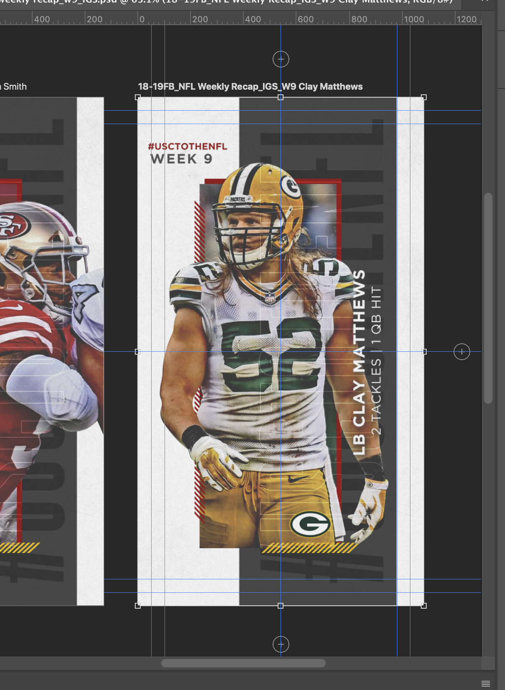
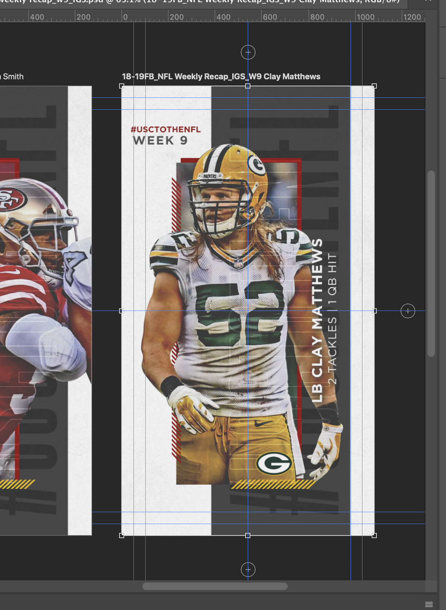

USC Athletics
No 1 About
Graphic design for the University of southern California's Athletics Department
My work at USC athletics primarily includes creating promotional graphics for all sports teams through media such as emails, print ads, in-game screens, and social media posts. My workload changes with the seasons so I have gotten to experience a variety of assignments and media demands. Whatever the sport, I prioritize that the team's unique brand is recognizable through design without relying on logos or mastheads.
No 2 Samples
Check out some of my past work.
No 2.5 Gifs
Gifs I made that can be found on Giffy under "USC".
No 3 Tools
- Photoshop
- Illustrator
- After Effects
No 4 The Process
Sports graphics can get repetitive, so I have learned that discipline requires both creativity and continuity.
I usually get to work at 8am, meaning I get to take my time brainstorming in peace before the rest of the office arrives. Most teams have specific aesthetics already established, so for each assignment I begin with visualizing layouts. I create a couple versions of wireframes and general designs, and then get to work inputing content. I love creating photo cutouts so I usually start there, and then once the images are placed, I move to text. While we are restricted to specific fonts by the school's style guide, I've learned to get pretty creative with kerning, strokes, and shadows so that one typeface can communicate various moods.
 
Not every assignment starts with ideation.
Sometimes instead of coming up with graphics from scratch, I need to work from a previously established template. Whether it be player rosters, score displays, or match lineups, the work can get monotonous, but this is probably where I've learned the most. Before working with USC Athletics, I had never used artboards in Photoshop. My first day, my boss showed me artboards, how to quick-export them, and the importance of naming your files. These are probably the most important lessons I've learned so far because it taught me how to design for others instead of just myself.